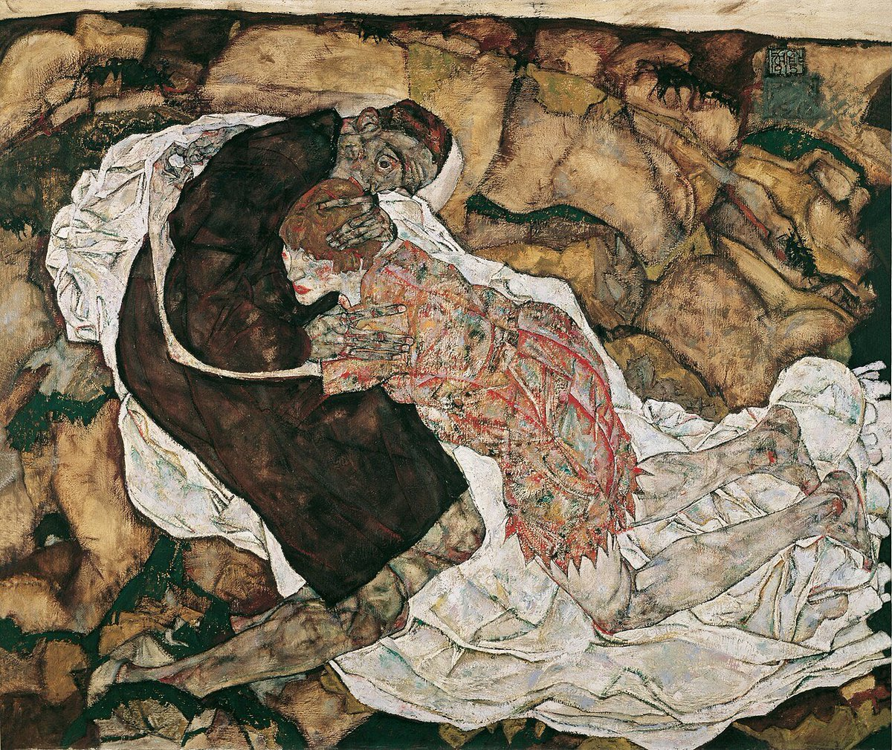

@8964tou12345678 一个在这个世界上存在过的人是不可能做到无痕的
以整体的观点看宇宙，其任一状态以前一时刻的最小事件为前提，任一事件又以前一时刻宇宙整体的状态为前提，因此我们可以说一个人只要存在过就可以在未来的一切事件中看到他的影响
只能说由于我们的感官记忆有限，于是这种存在就变为阈下的了，而非不存在

以整体的观点看宇宙，其任一状态以前一时刻的最小事件为前提，任一事件又以前一时刻宇宙整体的状态为前提，因此我们可以说一个人只要存在过就可以在未来的一切事件中看到他的影响
只能说由于我们的感官记忆有限，于是这种存在就变为阈下的了，而非不存在

#笔记
在古希腊时代就有人问过，如果一个人死了没有留下任何痕迹，比如一事无成 ，没继承他的家族，没值得传世的作品和思想，也没有传承他思想的徒子徒孙，他们是否还算“存在”于历史中？
在古希腊文化中，存在（being）与被记住（memory）密不可分：一个完全无痕的人，在逻各斯中几乎等同于“不存在”。 https://t.co/i0OXZuM2t0
在古希腊时代就有人问过，如果一个人死了没有留下任何痕迹，比如一事无成 ，没继承他的家族，没值得传世的作品和思想，也没有传承他思想的徒子徒孙，他们是否还算“存在”于历史中？
在古希腊文化中，存在（being）与被记住（memory）密不可分：一个完全无痕的人，在逻各斯中几乎等同于“不存在”。 https://t.co/i0OXZuM2t0